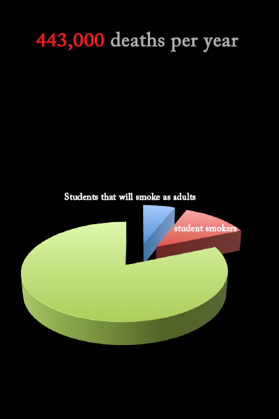

Lighting Up
-
Photo illustration by David Gisser

Lucas Foster '13 knew of Avalon Nuovo '13's talents as an illustrator when he texted her in last April. Foster and Nuovo have been friends, and knew of each other's talents. Foster's idea was a graphic novel.
He would craft the story, and she would provide the illustrations.
Foster and Nuovo already fall into a select group as two of the six seniors working on an independent study this semester. Foster and Nuovo are collaborating on a rarely approved two person independent study.
"I've known for a really long time that I was going to do an independent study as a senior," Foster said.
Once Nuovo accepted, the two artists had to persuade the independent study board. After many meetings, the board was convinced.
"Our original idea was to have a fully illustrated novel, but we realized that was a lofty goal," Nuovo said.
Foster and Nuovo, after consulting with the Independent Study board, decided to make the project more manageable by agreeing to finish 40 pages by the January deadline.
'We would definitely like to continue it and make it a full project." Nuovo added.
Foster's story, about a man involved in a terrible accident who travels to Indonesia, was inspired by his brother's tales of the two months he spent there.
Nuovo's mentor for the project, drawing and painting teacher Marianne Hall is a long-time fan of Nuovo's, having worked with her for the past three years.
"Avalon is amazing, she has an incredible visual memory, really high skill level, and she can visualize and draw out almost anything," Hall said.
Foster considers himself more a poet than novelist. He finds it a struggle to focus on a single protagonist, but the partnership has emboldened him.
"I really like telling stories, it kind of comes naturally to me," Foster said.
The duo hopes to distribute the project to students online.
"My main goals are to construct a graphic novel that at least ten people I admire deem worthy and have a better understanding of what it means to work with another artist," Foster said.
-

According to a national study conducted by the University of Michigan Institute for Social Research in 2011, Miley is one of roughly 18.7 percent of high school seniors who smoke, 30 percent of whom will likely consume cigarettes into their adulthood.
The U.S. Center for Disease Control reports that tobacco is responsible for approximately 443,000 deaths per year nationwide. Developing adolescents younger than 21 years of age are more susceptible to addiction and have more difficulty quitting, according to the U.S. National Library of Medicine website.
-
Information like this does not deter students like Bernard* '13, who is confident that he is not and will not be addicted to cigarettes. He began smoking during 10th grade out of curiosity and "rebellious urges."
"I probably smoke one every few days," he said. "Usually at home after finishing my homework, or if it's the weekend at a party. I just feel comfortable with it as a way to relax. I enjoy the way it makes me feel, but in small doses."
Bernard acknowledges the respiratory and cardiovascular repercussions of smoking, but he said he's not worried. One pack of cigarettes lasts him three weeks and he doesn't plan to continue past college. His father discovered his son's habit last year and was understanding.
"He used to smoke, but doesn't anymore," Bernard said. "He knows I'm being cautious about it and, as someone who overcame smoking very easily, he knows that I can kick the habit whenever I want to."
School psychologist Luba Bek identified the "rebellious urges" that Bernard spoke of as one of the main reasons adolescents take up smoking.
"Adolescents are searching for an identity," she said. "Ironically right now, smoking cigarettes is a rebellious act not because it's not an okay thing to do, but because it's asserting 'I'm different from everyone else.' In the previous decade, smoking was more about growing up. Now, it's more about standing out, although kids aren't willing to admit it."
Bek, who smoked as a teenager, said students need to be more serious about the negative effects of smoking.
"You might think it's very innocent, but it's one of the most addictive substances," she said. "It's not considered to be as serious as heroin or coke, but it is a serious addiction that is life-threatening."
Giselle* '13 said she won't smoke into her adulthood, and like Bernard, smokes for cigarettes' "relaxing effect." Her parents don't know that she smokes, and she plans to keep them in the dark. After taking a smoke, she chews gum and sprays herself with perfume to disguise the cigarette odor.
Giselle sometimes feels the need to smoke during school, but claims that she is not an addict. Although she goes through roughly a pack per week, she's not alone. She said she also shares her smokes with friends, especially on the weekends.
"School is stressful and can get annoying," she said. "Having a quick cigarette helps. I know it's bad for you, but I don't plan to do it forever."
However, nicotine's relaxing effect is what ultimately gets smokers hooked, according to a 2010 article on the Livestrong Foundation's website. Nicotine activates feelings of pleasure and reward in the brain, and exposure to nicotine results in tolerance for the drug. This can lead to addiction because increasing amounts of nicotine are required to maintain its original effect. In fact, less than one in 10 people who try to quit smoking succeed.
"The risk increases the longer you involve yourself with it," Cedars-Sinai Medical Group endocrinologist Dr. Eli Ginsburg said. "It's the amount of smoking you've done over the number of years you've done it. None of it is exact."
Ginsburg said in addition to commonly recognized ailments, like heart disease and lung cancer, cigarette smoking is associated with bladder cancer and chronic lung diseases like bronchitis. Furthermore, smoking only aggravates symptoms in people prone to asthma, even stimulating hidden heart problems to trigger defects like irregular heartbeats.
According to statistics published in a BBC health article Nov. 25, "Research has [also] repeatedly linked smoking and high blood pressure to a greater risk of cognitive decline and dementia." Samuel* '13 recognizes the danger smoking poses to his health and is trying to cut back on what he identifies as a frightening addiction. He started small, smoking twice a week at most. As he found himself swamped by the stress of junior year, he increasingly relied on cigarettes as a source of calm.
"I started getting scared about my habit this summer," he said. "Once I recognized I had an issue, I tried to be more aware of how much I was smoking and began cutting down because I was doing it way too often. I was smoking one or two [cigarettes] on my way to school, one or two off campus during a free period and three at the end of school. It was bad."
Now, Samuel limits his smoking during the day. When he goes off campus, he invites friends who don't smoke with him. That way, he's not tempted to pull out a cigarette.
Some students, like Meg* '13, smoke to curb other negative desires.
"When I stopped getting high, I needed a way to relieve stress," she said. "I met other sober people and they smoked to keep from falling back into old habits, so I joined."
Meg said her stress level determines how often she smokes.
"When I get stressed and find myself wishing I still had drugs, I'll go out and smoke a cigarette," she said. "Just one."

Beverly Hills pediatrician Dr. Ronald Nagel said this is an example of "one [potential] addiction leading to another."
"It is a much bigger problem in college," he said. "People smoke a few cigarettes and tell me, 'Doc, I can stop any time I want.' We are creatures of habit. Once you get that taste in your mouth, you've opened up the door."
Meg said she doesn't crave the nicotine. When her friends smoke, she feels no pressure to join them. Although she feels in control of her cigarette use, she has alternative methods of dealing with potential compulsion.
"I have friends trying to quit who smoke electronic cigarettes, which are safer, to relieve stress," she said. "If it got to a point where I was smoking more, I would look into that."
Nagel said e-cigs provide "the look without the danger," also citing nicotine patches as outlets through which potential addicts can ease off of cigarettes. However, he said, "you have to be motivated." He added that the few who quit successfully often experience weight problems later in life.
"You're used to having something in your mouth," he said. "Eating is a form of addiction too. You're just changing one disease with another."
His suggestion to avoid the potential ailments and addictions caused by smoking: don't do it in the first place.
"Get high on sports," Nagel said. "Not drugs."
*Names have been changed
Page coded and formatted by David Gisser